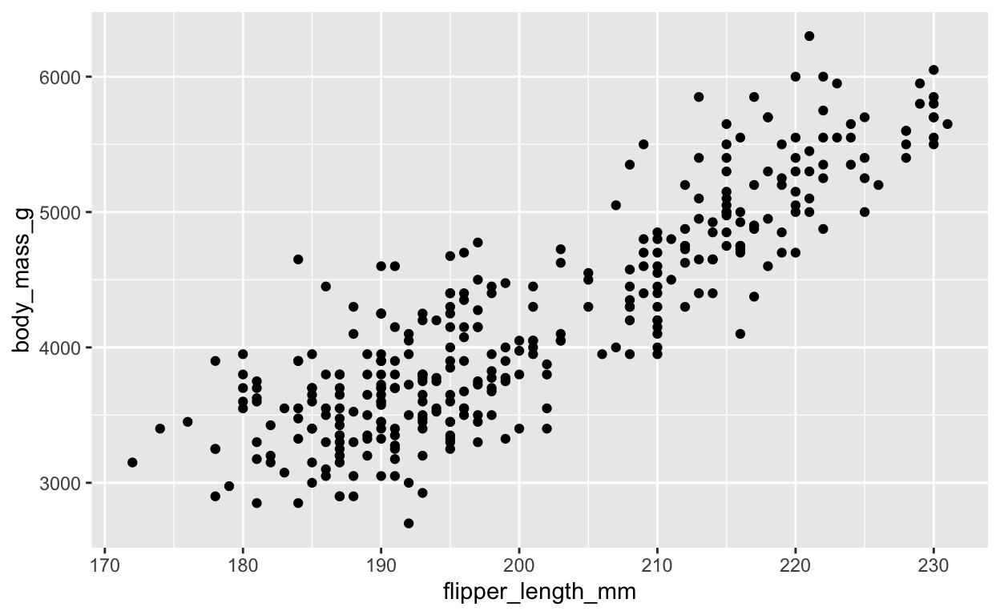
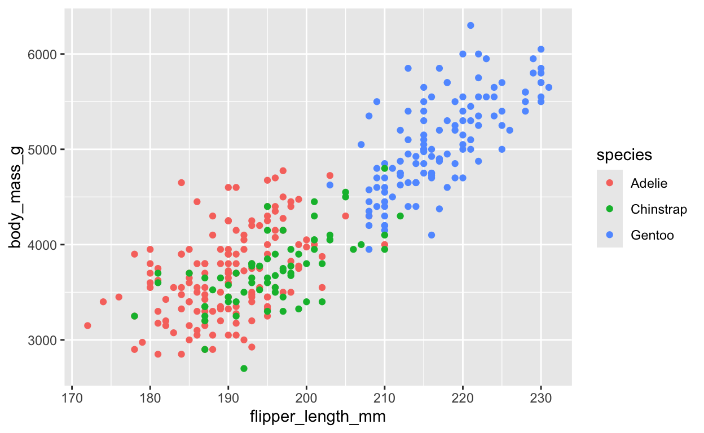
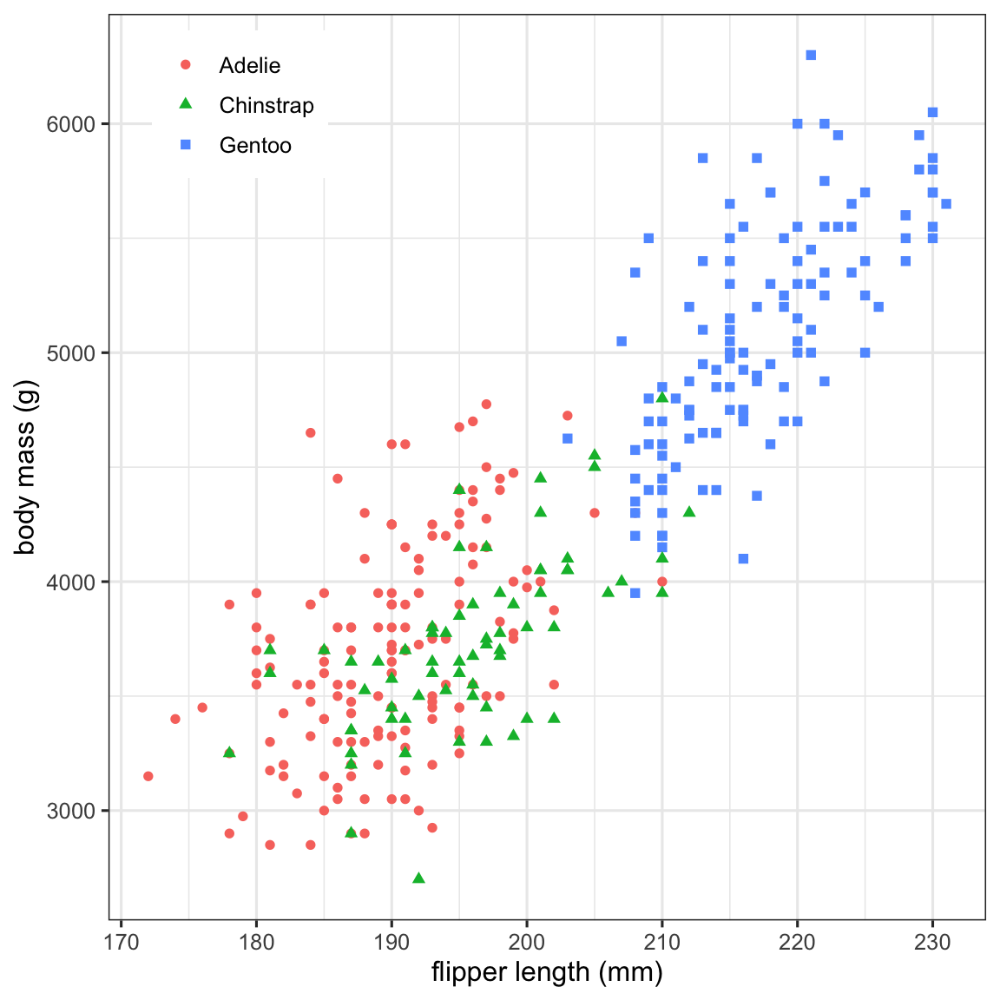
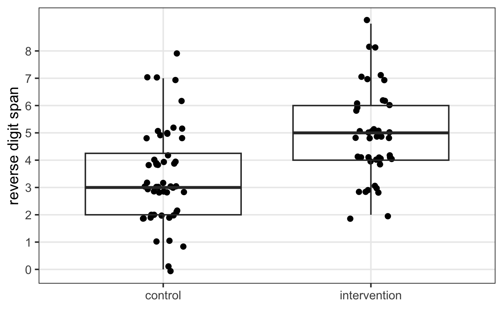
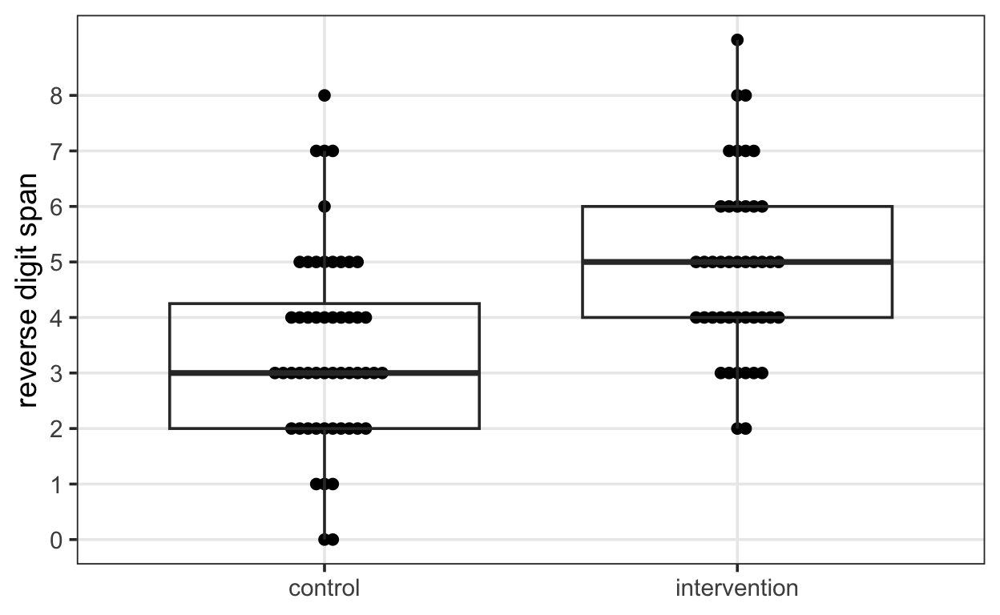
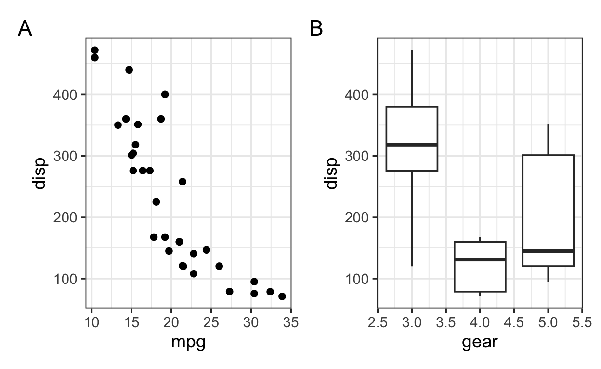

Epidemiology, Biostatistics and
Prevention Institute
Epidemiology, Biostatistics and
Prevention Institute
About this tutorial
This introduction to R outlines the code needed to analyze randomized controlled trials (RCTs), as conducted in our hands-on RCT courses:
- B102 (“Konzepte und Methoden der Epidemiologie”) in the Master of Public Health program,
- BME361 (“Randomised trials – From lab experiments to large preventive trials”) in the MSc program in Biomedicine, and
- EPI301 (“Introduction to Epidemiology”) in the PhD programs in Epidemiology and Biostatistics; Clinical Science; and Care & Rehabilitation Science.
We focus on performing the following key steps in analyzing a medical study:
- manipulating data with
dplyr - visualizing data with
ggplot2 - making tables with
gtsummary - running regression models and summarizing the results with
gtsummary
We’ll finish with a few notes on topics like 1) importing data with
readr, 2), using R in R Studio, 3) some tricks on
organizing your R script and 4) where to find more information on these
topics.
In other statistics or data analysis courses, you may have seen older
ways of programming in R (“base R”) that do not require
dplyr, ggplot2, or any other packages in the
so-called tidyverse. We use these packages here because
much of the documentation and examples found online (and of course, via
LLMs) comes from these packages. Fortunately, this code is also
(relatively) easy to read, even if you don’t have much experience in R
yet.
This tutorial is a work in progress! Please contact me at sarah.haile@uzh.ch if you have an comments or questions.
Radtke T, von Wyl V, Haile SR, Rohrmann S, Frei A, Puhan MA. Evidence-based coaching of core competencies in epidemiology, using the framework of randomized controlled trials: the Zurich approach. Int J Epidemiol. 2024 Apr 11;53(3):dyae075. doi: 10.1093/ije/dyae075.
Before we get started
Even without any data loaded, we can use R like a calculator. If we
type 2 + 2 and “Run Code” (in R Studio: Ctrl / CMD +
Enter), it calculates the answer:
2 + 2Some other mathematical operators you probably recognize are:
-(for subtraction or negative numbers),*(multiplication),/(division), and^(power, as in \(3^2\) =3^2).
There are also functions for
- square root (
sqrt()), - rounding to say 1 digit (
round(..., digits = 1)), - logarithm (
log(), or base 10,log10()), - exponential (
exp()).
Combining these operators, along with some parentheses, allows us to calculate many things. For example, calculate BMI (body mass index) for a person who is 180cm tall and weighs 85 kg.
# (weight in kg) / ((height in cm)^2)85 / (1.8^2)We can also save these height and weight values with an arrow,
<-, and use them later for the calculation.
wt <- 85
ht <- 180
wt / ((ht / 100) ^2)## [1] 26.23457But what if we had height and weight for, say 3 people?
- Person 1: weight 85, height 180
- Person 2: weight 90, height 190
- Person 3: weight 95, height 200
It would be annoying, not to mention error-prone, to have to
calculate each BMI separately. To save all 3 heights or weights at once,
we use a vector, by putting all 3 values inside c(),
separated by commas: c(85, 90, 95).
wt <- c(...)
ht <- c(...)
...# (weight in kg) / ((height in cm)^2)wt <- c(85, 91, 95)
ht <- c(180, 190, 200)
wt / ((ht / 100)^2)Now that we’re working with more than one observation, we might also need functions like:
- mean (
mean()), - standard deviation (
sd()), - median (
median()), - sum (
sum()), or - minimum and maximum (
min(),max()).
wt <- c(85, 90, 95)
ht <- c(180, 190, 200)
bmi <- wt / ((ht / 100)^2)
mean(bmi)## [1] 24.97177Combining this information in a dataset, and then performing the calculation is more efficient. We’ll talk more about that in the next two sections.
library(dplyr)
mydata <- tibble(id = c(1, 2, 3),
wt = c(85, 90, 95),
ht = c(180, 190, 200)) |>
mutate(bmi = wt / ((ht / 100)^2))
mydataTrial data
Now, imagine we have just completed a randomized clinical trial.
- Population: students in this course
- Intervention: watching a concentration video for 5 minutes
- Control: watching a screensaver-type video for 5 minutes
- Outcome: reverse digit span test
The primary outcome is the reverse digit span test, a computer-based test of memory (high number of digits is better). Secondary outcomes are the cold pressor test (number of seconds you can keep your hand in ice cold water), and a video challenge, that participants either complete or do not.
Take a first look
We have exported the study data from redcap, imported it into R, and
named it dat. Use the functions head() or
glimpse() to look at the data structure (or
View() if you’re already using R studio),
names() to see what variables there are. (Note that every
new line is a new command.)
glimpse(...)
names(...)glimpse(dat)
# View(dat)
names(dat)Here is a simplified version of what you might find in the redcap codebook for this dataset:
| variable name | description | coding |
|---|---|---|
study_id |
participant number | |
first / last |
first and last initials | |
inclusion... |
4 variables with different inclusion criteria | should all be 1 |
exclusion... |
2 variables with different exclusion criteria | should all be 0 |
screened |
screening complete? | 1 = yes, 0 = no |
informed_consent |
participant signed informed consent? | 1 = yes, 0 = no |
age_today |
State your age today. | |
gender |
State your gender. | 0 = female, 1 = male, 2 = other |
video_games |
How long do you play video games on an average day? | 0 = <30 minutes, 1 = 30-60 minutes, 2 = 60-120 minutes, 3 = more than 120 minutes. |
randomization_group |
Randomized intervention | 0 = control, 1 = intervention |
reverse_digit |
reverse digit span test | number of digits remembered |
cold_pressor |
cold pressor test | number of seconds participant kept their hand in the ice water |
video_challenge |
could the participant finish the short video challenge? | 1 = yes, 0 = no |
Check some basic numbers
Next, we run some basic checks to see how many participants have been included, how many have been randomized, and how many have complete the primary endpoint.
Q: How many participants are in the data?
Use nrow() to find out how many participants have been
screened.
nrow(...)nrow(dat)Q: How many of them have been randomized?
A common thing to check when you’re first looking at a dataset is how
many of something there are. How many participants? How many
participanted have been randomized? How many are at least 18 years old?
For these tasks, we need count(). Using dplyr
coding style, we write the name of the dataset, dat, write
“then” using the so-called “pipe” |> (or
%>%, either way it’s ctrl / cmd + M), and finally
count().
dat |>
count()This count should be the same as we got above with
nrow().
We want to see how many participants are in each category of
randomization_group, or where it is missing. So let’s
count() randomization_group.
dat |>
count(...)dat |>
count(randomization_group)Q: How many have the primary endpoint, the reverse digit span test?
The is.na() function checks if a value is missing
(NA). To check if it’s not missing, use
!is.na() (! means “not”).
dat |> count(!is.na(...))dat |> count(!is.na(reverse_digit))Q: How does age look?
For continuous (or mostly continuous) outcomes, such as age
(age_today), it’s helpful to look at all individual
reported values, not just mean or median values. We can also use
count() for this.
dat |> count(...)dat |> count(age_today)If any of these values appear to be typos, implausible, or otherwise incorrect, what do we do next? Generally, a good approach is to
- Talk to the study coordinator;
- If required, they can correct the data directly in redcap, correctly documenting the change;
- Then, the data analyst can re-export the data, and rerun the analysis.
Clean the data
To make a smaller cleaned version of the data for analysis, we might consider doing the following:
- Remove screening variables. Choosing variables to keep is done with
select(var1, var2). If you just want to drop a few variables, tryselect(-var1, -var2). - Rename study_id to id, randomization_group to trt, age_today to age.
Renaming variables can be performed by typing
rename(newname = oldname). - Give labels to gender, trt and video_games. The command
mutate()can be used to make various changes to variables. Specifically, in these cases, we need to also usefactor(). If, for example, we have a 0/1 variable calledvarwhere 0 means “no” and 1 means “yes”, we could writemutate(var = factor(var, c(0, 1), c("no", "yes")). We can also put multiple changes to multiple variables insidemutate(). - Filter out participants that are not randomized and do not have the
primary endpoint. For this, there are two options
filter()orfilter_out(). If you usefilter(), write out conditions which should be met (“inclusion criteria”). Alternately, if you usefilter_out(), write out conditions which should not be met (“exclusion criteria”). Multiple conditions can be separated by a comma, and will be combined with AND (&). If you want OR, you could write|instead of a comma. For example, to keep female participants aged 45 or older, we could writefilter(gender == 0, age_today >= 45).
All of these functions are in the dplyr package.
sm <- dat |>
select(...) |>
rename(...) |>
mutate(...) |>
filter(...)sm <- dat |>
select(-...) |>
rename(id = ...,
trt = ...,
age = ...) |>
mutate(gender = factor(gender, 0:2, c(...)),
trt = factor(trt, 0:1, c(...)),
video_games = factor(video_games, 0:3,
c(...))) |>
filter(..., ...)sm <- dat |>
select(-(over17:screened)) |>
rename(id = study_id,
trt = randomization_group,
age = age_today) |>
mutate(gender = factor(gender, 0:2, c("F", "M", "O")),
trt = factor(trt, 0:1, c("control", "intervention")),
video_games = factor(video_games, 0:3,
c("<30 minutes per day", "30-60", "60-120", "120+"))) |>
filter(!is.na(trt), !is.na(reverse_digit))Make a demographics table
Now that we’ve cleaned the dataset, let’s make a table of baseline
characteristics. From the dataset we made in the last step, we probably
want to include age, gender, video_games and report summary
statistics by trt. Using the R package gtsummary, we can
do this with the function tbl_summary() (see also the introduction
on the gtsummary website).
library(gtsummary)
sm |>
select(...) |>
tbl_summary(by = ...)library(gtsummary)
sm |>
select(trt, age, gender, video_games) |>
tbl_summary(by = trt)To clean up or improve the table, try customizing
it with options like label, value,
digit or statistic.
library(forcats)
sm |>
select(trt, age, gender, video_games) |>
mutate(video_games = fct_recode(video_games, "<30" = "<30 minutes per day")) |>
tbl_summary(by = trt,
label = list(video_games = "video games (minutes / day)",
gender ~ "gender (F)"),
value = list(gender ~ "F"),
digits = list(age ~ 1),
statistic = list(age ~ "{mean} ± {sd}"))| Characteristic | control N = 521 |
intervention N = 431 |
|---|---|---|
| age | 35.3 ± 5.7 | 35.3 ± 5.8 |
| gender (F) | 30 (58%) | 30 (70%) |
| video games (minutes / day) | ||
| <30 | 21 (40%) | 14 (33%) |
| 30-60 | 26 (50%) | 24 (56%) |
| 60-120 | 4 (7.7%) | 4 (9.3%) |
| 120+ | 1 (1.9%) | 1 (2.3%) |
| 1 Mean ± SD; n (%) | ||
If you just need quick summary statistics, sometimes combining
group_by() and summarize() or
count() is faster:
sm |>
group_by(trt) |>
summarize(n = n(),
mean_age = mean(age),
sd_age = sd(age))sm |>
group_by(trt, video_games) |>
count()Visualize the outcomes
A very flexible approach to graphing in R uses the
ggplot2 package (take a look at the overview
on the package website).
Let’s work through an example first, using some data we have on weight and flipper length of 3 different species of penguins.
penguins |>
select(species, body_mass_g, flipper_length_mm)Suppose we want to make a scatter plot with flipper length on the
x-axis, and body mass on the y-axis. We set this information up in the
ggplot() function like this:
ggplot(aes(x = ..., y = ...),
data = ...)and then add (with +) geom_point() to say
we want to show the data with points. Note the warning which points out
that data for 2 animals were missing and were not included in the
plot.
library(ggplot2)
ggplot(aes(x = flipper_length_mm, y = body_mass_g),
data = penguins) +
geom_point()
We cannot see which animal is which species yet, but if we wanted to make each species a different color, we can add a color option:
ggplot(aes(x = flipper_length_mm, y = body_mass_g,
color = species),
data = penguins) +
geom_point()
Adding a few other options, we have a plot that could be used later in a publication or presentation.
library(ggplot2)
theme_set(theme_bw(base_size = 12))
ggplot(aes(x = flipper_length_mm, y = body_mass_g,
color = species, shape = species),
data = penguins) +
geom_point() +
xlab("flipper length (mm)") +
ylab("body mass (g)") +
guides(color = guide_legend(NULL),
shape = guide_legend(NULL)) +
theme(legend.position = "inside",
legend.position.inside = c(0.15, 0.9))
publication-ready figure
Let’s see how to make a boxplot.
ggplot(aes(x = species, y = body_mass_g,
color = species),
data = penguins) +
geom_boxplot() +
xlab(NULL) + ylab("body mass (g)") +
guides(color = "none")
Now let’s try to make a boxplot for the primary outcome in our RCT, by treatment.
library(ggplot2)
sm |>
ggplot(aes(..., ...)) +
geom_...()library(ggplot2)
sm |>
ggplot(aes(trt, reverse_digit)) +
geom_boxplot()library(ggplot2)
theme_set(theme_bw(base_size = 14))
sm |>
ggplot(aes(trt, reverse_digit)) +
geom_boxplot() +
xlab(NULL) + ylab("reverse digit span")In smaller studies, it’s helpful to plot the observations as well as
the summary boxplot. One good option for this is with a beeswarm
plot, or by using geom_jitter.
If there’s not too much overlap in the outcome values between
participants, geom_point might also work.
library(ggplot2)
theme_set(theme_bw(base_size = 14))
library(ggbeeswarm)
sm |>
ggplot(aes(trt, reverse_digit)) +
geom_jitter(width = 0.1, height = 0.2) +
geom_boxplot(fill = NA, outliers = FALSE) +
xlab(NULL) + ylab("reverse digit span") +
scale_y_continuous(breaks = 0:8,
minor_breaks = NULL)
sm |>
ggplot(aes(trt, reverse_digit)) +
geom_beeswarm() +
geom_boxplot(fill = NA, outliers = FALSE) +
xlab(NULL) + ylab("reverse digit span") +
scale_y_continuous(breaks = 0:8,
minor_breaks = NULL)
To save the graph, try the ggsave() function. It will
save the most recent graph by default.
ggsave("primary_beeswarm.jpg")Compare and test the outcomes
From the boxplot, it looked like the intervention arm had more remembered digits than the control arm. Now we summarize these values, and test for differences between the two groups.
Just like we did earlier with the demographics table, let’s make a summary table of the primary endpoint, or all 3 endpoints.
# try tbl_summary()sm |>
select(trt, ...) |>
tbl_summary(by = ...)sm |>
select(trt, ...) |>
tbl_summary(by = ...,
type = list(reverse_digit ~ "continuous"),
statistic = list(reverse_digit ~ "{mean} ({sd})"))sm |>
select(trt, reverse_digit, cold_pressor, video_challenge) |>
tbl_summary(by = trt,
type = list(reverse_digit ~ "continuous"),
statistic = list(reverse_digit ~ "{mean} ({sd})",
cold_pressor ~ "{mean} ({sd})"))The difference between these two means is exactly what we should get
from a two-sample t-test, or linear regression. If we use linear
regression, it’s quite easy to get publication-ready output using
tbl_regression()from the gtsummary
package.
mod <- lm(reverse_digit ~ trt, data = sm)
tbl_regression(mod, conf.int = TRUE)| Characteristic | Beta | 95% CI | p-value |
|---|---|---|---|
| trt | |||
| control | — | — | |
| intervention | 1.4 | 0.74, 2.1 | <0.001 |
| Abbreviation: CI = Confidence Interval | |||
Now try to run a similar model for cold_pressor.
mod <- lm(... ~ trt, data = sm)
tbl_regression(mod, conf.int = TRUE)mod <- lm(cold_pressor ~ trt, data = sm)
tbl_regression(mod, conf.int = TRUE)And for binary outcomes like the video_challenge, we can
run logistic regression. While there is no function in R to run a
logistic regression model directly, we can use glm() with
the option family = binomial. To get odds ratios, we put
the option exponentiate = TRUE in
tbl_regression().
mod <- glm(video_challenge ~ trt, data = sm,
family = binomial)
tbl_regression(mod, conf.int = TRUE,
exponentiate = TRUE)| Characteristic | OR | 95% CI | p-value |
|---|---|---|---|
| trt | |||
| control | — | — | |
| intervention | 6.04 | 2.44, 16.1 | <0.001 |
| Abbreviations: CI = Confidence Interval, OR = Odds Ratio | |||
Back to the beginning: importing data
Most of the time, datasets will not come already loaded in R. But it
can be complicated to get the data in correctly. For csv
files exported from redcap, read_csv from the readr package is a
good place to start.
If you export the dataset with decimal points, ., you’ll
find that read_csv should work just fine. If you exported
it with decimal commas, ,, or if you’ve saved data in Excel
on your computer using a Swiss locale, try read_csv2.
If you’re working with an Excel spreadsheet that is not saved as
csv, the readxl package will help. For other
formats, like from SPSS, SAS, or STATA, try the haven
package.
Back to the beginning: using R Studio
- Download and install R: Go to https://stat.ethz.ch/CRAN/ and choose the option for your operating system.
- Download and install R Studio: Go to https://docs.posit.co/ide/user/, and choose the option for your operating system.
- To avoid having to define the folder you’re working in, make a new project (File > New Project…).
- In the top left corner, click on the “+” to make a new R script.
- Start typing…
Tips for organizing your R script
- Load any packages you’ll need at the very beginning of the script, even if you don’t need them until later.
- Following the order of the publication: Do all data cleaning steps at the beginning. Then make descriptive tables and figures. Finally, run regression models.
- Try not to make a different dataset for each part of the analysis. If nothing else, this makes it quite difficult to define the analysis population. One or two datasets is usually sufficient.
- Your code should be easy(-ish) to follow, since you’d like to be
able to understand it yourself if you look at it a year from now.
- Everytime you use a pipe,
|>, put the next code on a new line. - Same for
+in ggplot graphs. - If you’ve written the same calculation several times
(e.g.
height / 100), try to save it once and use that (ht_m = height / 100).
- Everytime you use a pipe,
Many more useful tips can be found in the online book “R for Data Science”.
For more information
The online document for all tidyverse packages is
excellent.
dplyris for data manipulationggplot2is for visualizationreadris for importing dataforcatshas many functions for dealing with factor variablesstringrhas many functions for dealing with character stringstidyrhelps get your data into an easy to analyze rectangular format
Two online books worth mentioning:
There are a few options for making participant demographics tables,
but gtsummary
is one well-documented option that also makes it easy to get regression
tables. Have a look at the tutorials for summary
and regression
tables.
If you are not exporting data from redcap or another electronic data capture system, consider organizing your data to enable data analysis:
- Broman KW, Woo KH. Data organization in spreadsheets. The American Statistician. 2018 Jan 2;72(1):2-10. doi:10.1080/00031305.2017.1375989
When you need to combine graphs, patchwork
is great.
library(patchwork)
p1 <- ggplot(mtcars) +
geom_point(aes(mpg, disp))
p2 <- ggplot(mtcars) +
geom_boxplot(aes(gear, disp, group = gear))
p1 + p2 + plot_annotation(tag_levels = "A")